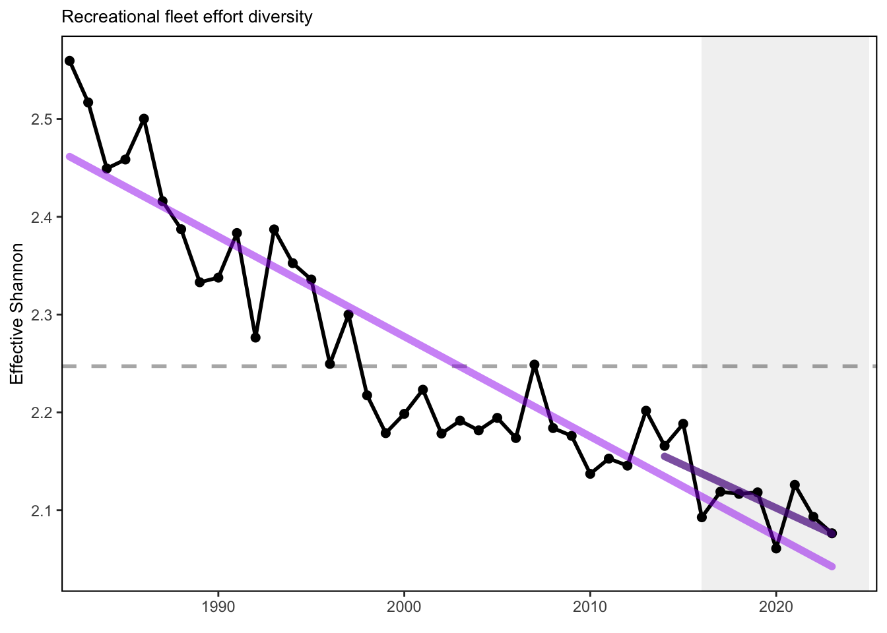
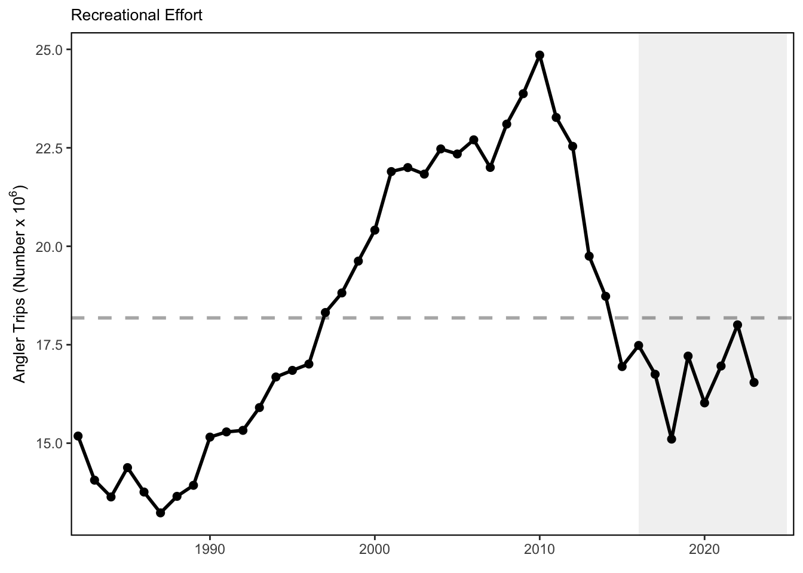

SMART Indicator Report: Recreational Fishing Indicators
1 Descriptive Section
1.2 Indicator name
Recreational Fishing Indicators
Includes variable(s): Recreational Diversity of Catch, Recreational Effort, Recreational fleet effort diversity across modes, Recreational Seafood
1.3 Indicator brief description
A variety of indicators derived from MRIP Recreational Fisheries Statistics, including total recreational catch, total angler trips by region, annual diversity of recreational fleet effort, and annual diversity of managed species.
1.4 Indicator visualization
Total recreational harvest (retained fish presumed to be eaten) is down in the MAB. Although harvest has increased from a historic low in 2018, it is still below the long term average. Overall, recreational harvest (harvested fish presumed to be eaten) have also declined in New England. Recreational harvest in 2023 is up somewhat from the historical low seen in 2020. Recreational effort (angler trips) in New England increased during 1980-2010, but has since declined to just around the long-term average. Recreational fleets are defined as private vessels, shore-based fishing, or party-charter vessels. Recreational fleet diversity, or the relative importance of each fleet type, has remained relatively stable over the latter half of the time series in New England. In the Mid-Atlantic, recreational effort (angler trips) in 2023 is above the long-term average. However, recreational fleet diversity has declined over the long term. In New England, recreational species catch diversity has been above the time series average since 2008 with a long-term positive trend. In the Mid-Atlantic, recreational species catch diversity has no long term trend so is considered stable, and has been at or above the long term average in 9 of the last 10 years.

2 SMART Attribute Section
2.1 Indicator documentation
2.1.1 Are indicators available for others to use (data downloadable)?
Yes
2.1.1.1 Where can indicators be found?
Data: https://noaa-edab.github.io/ecodata/index.html
Description: https://noaa-edab.github.io/catalog/recdat.html
Technical documentation: https://noaa-edab.github.io/tech-doc/recdat.html
2.1.1.2 How often are they updated? Are future updates likely?
[need sequential look at datasets for update frequency. Future requires judgement]
2.1.1.3 Who is the contact?
Geret DePiper (geret.depiper@noaa.gov)
2.1.2 Gather indicator statistics
2.1.2.1 Units
Indicator | Units |
|---|---|
Recreational Diversity of Catch | Effective Shannon |
Recreational Effort | Number of days fished |
Recreational fleet effort diversity across modes | Effective Shannon |
Recreational Seafood | lbs of fish |
2.1.2.2 Length of time series, start and end date, periodicity
General overview: Annual
Indicator specifics:
Indicator | EPU | StartYear | EndYear | NumYears | MissingYears |
|---|---|---|---|---|---|
Recreational Diversity of Catch | MA | 1982 | 2023 | 42 | 0 |
Recreational Diversity of Catch | NE | 1982 | 2023 | 42 | 0 |
Recreational Effort | MA | 1982 | 2023 | 42 | 0 |
Recreational Effort | NE | 1982 | 2023 | 42 | 0 |
Recreational fleet effort diversity across modes | MA | 1982 | 2023 | 42 | 0 |
Recreational fleet effort diversity across modes | NE | 1982 | 2023 | 42 | 0 |
Recreational Seafood | MA | 1982 | 2023 | 42 | 0 |
Recreational Seafood | NE | 1982 | 2023 | 42 | 0 |
2.1.2.3 Spatial location, scale and extent
General overview: MA and NE
Indicator specifics:
Indicator | EPU |
|---|---|
Recreational Diversity of Catch | MA |
Recreational Diversity of Catch | NE |
Recreational Effort | MA |
Recreational Effort | NE |
Recreational fleet effort diversity across modes | MA |
Recreational fleet effort diversity across modes | NE |
Recreational Seafood | MA |
Recreational Seafood | NE |
2.1.3 Are methods clearly documented to obtain source data and calculate indicators?
Yes
2.1.4 Are indicator underlying source data linked or easy to find?
Data sets are publicly available (see Data Sources below).
2.1.4.1 Where are source data stored?
All recreational fishing indicator data, including number of recreationally harvested fish, number of angler trips, and number of anglers, were downloaded from the Marine Recreational Information Program MRIP Recreational Fisheries Statistics Queries portal. Relevant metadata including information regarding data methodology updates are available at the query site. Note that 2017 data were considered preliminary at the time of the data pull. Data sets were queried by region on the MRIP site, and for the purposes of the State of the Ecosystem reports, the “NORTH ATLANTIC” and “MID-ATLANTIC” regions were mapped to the New England and Mid-Atlantic report versions respectively. All query pages are accessible through the MRIP Recreational Fisheries Statistics site. The number of recreationally harvested fish was found by selecting “TOTAL HARVEST (A + B1)” on the Catch Time Series Query page. Catch diversity estimates were also derived from the total catch time series (see below). Species included in the diversity of catch analysis can be found in Table 61.1. The Mid-Atlantic Fishery Management Council asked that species managed by the South Atlantic Fishery Management Council be distinguished in the analysis of recreational species diversity. Angler trips (listed as “TOTAL” trips) were pulled from the MRIP Effort Time Series Query page, and included data from 1981 - 2021. Time series of recreational fleet effort diversity were calculated from this data set (see below). The number of anglers was total number of anglers from the Marine Recreational Fishery Statistics Survey (MRFSS) Participation Time Series Query, and includes data from 1981 - 2016.
2.1.4.2 How/by whom are source data updated? Are future updates likely?
Geret DePiper, geret.depiper@noaa.gov
[likelihood of source data updates requires judgement, enter by hand]
2.2 Indicator analysis/testing or history of use
2.2.1 What decision or advice processes are the indicators currently used in?
We use total recreational harvest as an indicator of seafood production and total recreational trips and total recreational anglers as proxies for recreational value generated from the Mid-Atlantic and New England regions respectively. We estimate both recreational catch diversity in species managed by the Fisheries Management Councils; Mid-Atlantic (MAFMC), New England (NEFMC), South Atlantic (SAFMC) and Atlantic States (ASFMC), and fleet effort diversity using the effective Shannon index.
2.2.2 What implications of the indicators are currently listed?
The decline in recreational seafood harvest in New England stems from multiple drivers. Changes in demographics and preferences over recreational activities likely play a role in non-HMS (Highly Migratory Species) declines in recreational harvest, with current harvests near the lowest in the time series. Drivers of the the decline in Mid-Atlantic recreational seafood harvest are unclear. NOAA Fisheries’ Marine Recreational Information Program survey methodology was updated in 2018, so it is unclear whether the record-low landings for species other than sharks in 2018 are driven by changes in fishing behavior or the change in the survey methodology. Nevertheless, the recreational harvest seems to be stabilizing at a lower level than historical estimates. Diversity indices can be used to evaluate stability objectives as well as risks to fishery resilience and to maintaining equity in access to fishery resources. In New England, the absence of a long term trend in recreational angler trips and fleet effort diversity suggests relative stability in the overall number of recreational opportunities in the region. While the overall number of angler trips in the MAB is above the long-term average, the continuing decline in recreational fleet effort diversity suggests a potentially reduced range of recreational fishing options. The downward effort diversity trend is driven by party/charter contraction (currently below 2% of trips), and a shift toward shore-based angling, which currently makes up 59% of angler trips. Effort in private boats remains stable at around 40% of trips. Changes in recreational fleet diversity can be considered when managers seek options to maintain recreational opportunities. Shore anglers will have access to different species than vessel-based anglers, and when the same species is accessible both from shore and from a vessel, shore anglers typically have access to smaller individuals. Many states have developed shore-based regulations where the minimum size is lower than in other areas and sectors to maintain opportunities in the shore angling sector. The increase in recreational species catch diversity in New England is due to recent increases in ASMFC and MAFMC managed species within the region as well as decreased limits on more traditional regional species. Stability in Mid-Atlantic recreational species catch diversity has been maintained by a different set of species over time. A recent increase in Atlantic States Marine Fisheries Commission (ASMFC) and South Atlantic Fishery Management Council (SAFMC) managed species in recreational catch is helping to maintain diversity in the same range that MAFMC and New England Fishery Management Council (NEFMC) species supported in the 1990s.
2.2.3 Do target, limit, or threshold values already exist for the indicator?
Target, limit, or threshold terms detected
2.2.4 Have the indicators been tested to ensure they respond proportionally to a change in the underlying process?
No
3 SMART rating
Category | Indicator | Element | Attribute | Rating | ElementRating | OverallRating |
|---|---|---|---|---|---|---|
Fishery | Recreational Fishing Indicators | Specific | Described | 1.0 | 0.6666667 | 0.6833333 |
Fishery | Recreational Fishing Indicators | Specific | Units | 1.0 | 0.6666667 | 0.6833333 |
Fishery | Recreational Fishing Indicators | Specific | Spatial | 1.0 | 0.6666667 | 0.6833333 |
Fishery | Recreational Fishing Indicators | Specific | Uncertainty | 0.0 | 0.6666667 | 0.6833333 |
Fishery | Recreational Fishing Indicators | Specific | Methods | 1.0 | 0.6666667 | 0.6833333 |
Fishery | Recreational Fishing Indicators | Specific | Code | 0.0 | 0.6666667 | 0.6833333 |
Fishery | Recreational Fishing Indicators | Measurable | Available | 1.0 | 1.0000000 | 0.6833333 |
Fishery | Recreational Fishing Indicators | Measurable | Online | 1.0 | 1.0000000 | 0.6833333 |
Fishery | Recreational Fishing Indicators | Measurable | Contact | 1.0 | 1.0000000 | 0.6833333 |
Fishery | Recreational Fishing Indicators | Measurable | SourceDat | 1.0 | 1.0000000 | 0.6833333 |
Fishery | Recreational Fishing Indicators | Measurable | SourceAvail | 1.0 | 1.0000000 | 0.6833333 |
Fishery | Recreational Fishing Indicators | Measurable | SourceContact | 1.0 | 1.0000000 | 0.6833333 |
Fishery | Recreational Fishing Indicators | Achievable | Tested | 0.0 | 0.0000000 | 0.6833333 |
Fishery | Recreational Fishing Indicators | Achievable | Sensitivity | 0.0 | 0.0000000 | 0.6833333 |
Fishery | Recreational Fishing Indicators | Achievable | TimeLag | 0.0 | 0.0000000 | 0.6833333 |
Fishery | Recreational Fishing Indicators | Relevant | Advice | 1.0 | 1.0000000 | 0.6833333 |
Fishery | Recreational Fishing Indicators | Relevant | Implications | 1.0 | 1.0000000 | 0.6833333 |
Fishery | Recreational Fishing Indicators | Relevant | TargThresh | 1.0 | 1.0000000 | 0.6833333 |
Fishery | Recreational Fishing Indicators | Timebound | Frequency | 1.0 | 0.7500000 | 0.6833333 |
Fishery | Recreational Fishing Indicators | Timebound | Updated | 0.5 | 0.7500000 | 0.6833333 |
3.1 Comments
[Fill below by hand once above data complete]
3.1.1 Additional potential links to management in addition to uses listed above
3.1.2 What additional work would be needed for the Council to use the indicator?
3.1.3 What issues are caused if there is a gap or delay in data underlying the indicator